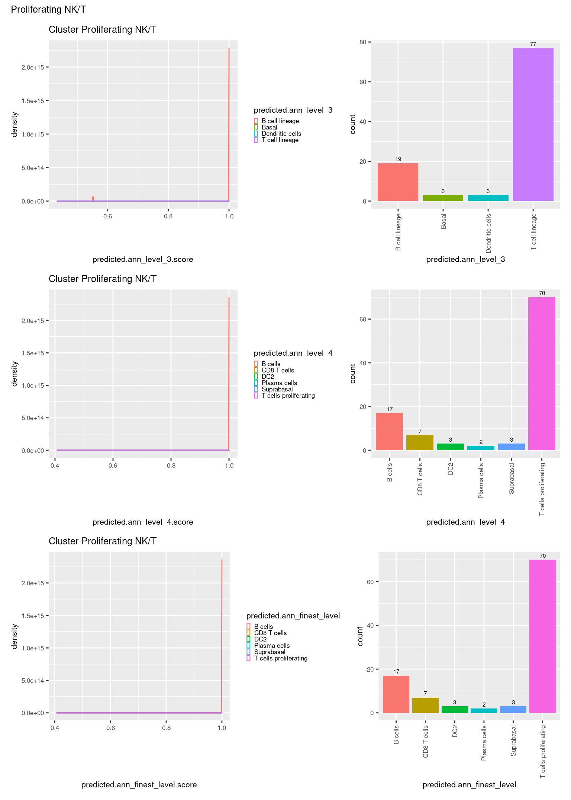
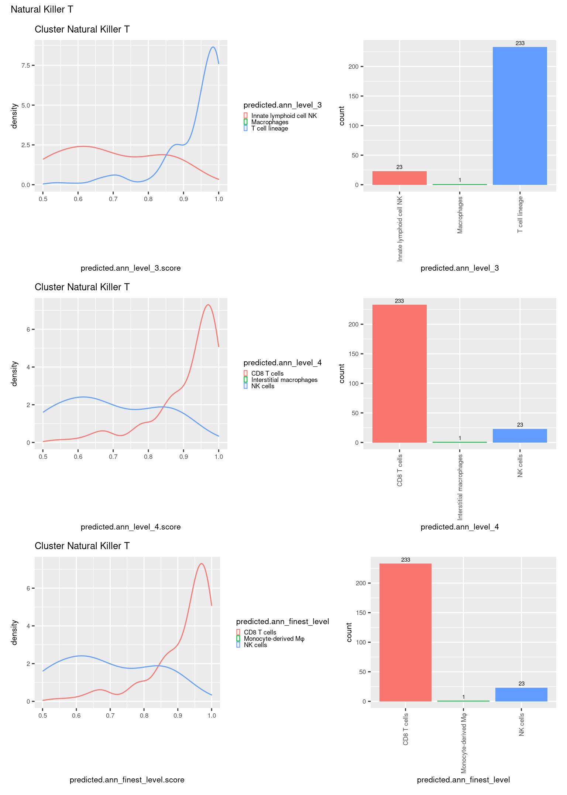

Analysis of scRNA-seq & CITE-seq Data Combined
Combine and Annotate Data
Jovana Maksimovic
June 16, 2022
Last updated: 2022-06-16
Checks: 7 0
Knit directory:
paed-cf-cite-seq/
This reproducible R Markdown analysis was created with workflowr (version 1.7.0). The Checks tab describes the reproducibility checks that were applied when the results were created. The Past versions tab lists the development history.
Great! Since the R Markdown file has been committed to the Git repository, you know the exact version of the code that produced these results.
Great job! The global environment was empty. Objects defined in the global environment can affect the analysis in your R Markdown file in unknown ways. For reproduciblity it’s best to always run the code in an empty environment.
The command set.seed(20210524) was run prior to running the code in the R Markdown file.
Setting a seed ensures that any results that rely on randomness, e.g.
subsampling or permutations, are reproducible.
Great job! Recording the operating system, R version, and package versions is critical for reproducibility.
Nice! There were no cached chunks for this analysis, so you can be confident that you successfully produced the results during this run.
Great job! Using relative paths to the files within your workflowr project makes it easier to run your code on other machines.
Great! You are using Git for version control. Tracking code development and connecting the code version to the results is critical for reproducibility.
The results in this page were generated with repository version f6c4e96. See the Past versions tab to see a history of the changes made to the R Markdown and HTML files.
Note that you need to be careful to ensure that all relevant files for the
analysis have been committed to Git prior to generating the results (you can
use wflow_publish or wflow_git_commit). workflowr only
checks the R Markdown file, but you know if there are other scripts or data
files that it depends on. Below is the status of the Git repository when the
results were generated:
Ignored files:
Ignored: .Rhistory
Ignored: .Rproj.user/
Ignored: analysis/obsolete/
Ignored: code/obsolete/
Ignored: data/190930_A00152_0150_BHTYCMDSXX/
Ignored: data/CellRanger/
Ignored: data/GSE127465_RAW/
Ignored: data/SCEs/02_ZILIONIS.sct_normalised.SEU.rds
Ignored: data/SCEs/03_C133_Neeland.demultiplexed.SCE.rds
Ignored: data/SCEs/03_C133_Neeland.emptyDrops.SCE.rds
Ignored: data/SCEs/03_C133_Neeland.nuclear_fraction_calls.rds
Ignored: data/SCEs/03_C133_Neeland.preprocessed.SCE.rds
Ignored: data/SCEs/03_CF_BAL_Pilot.CellRanger_v6.SCE.rds
Ignored: data/SCEs/03_CF_BAL_Pilot.emptyDrops.SCE.rds
Ignored: data/SCEs/03_CF_BAL_Pilot.nuclear_fraction_calls.rds
Ignored: data/SCEs/03_CF_BAL_Pilot.preprocessed.SCE.rds
Ignored: data/SCEs/03_COMBO.clustered.SEU.rds
Ignored: data/SCEs/03_COMBO.clustered_annotated_macrophages_diet.SEU.rds
Ignored: data/SCEs/03_COMBO.clustered_annotated_others_diet.SEU.rds
Ignored: data/SCEs/03_COMBO.clustered_annotated_tcells_diet.SEU.rds
Ignored: data/SCEs/03_COMBO.clustered_azimuth.SEU.rds
Ignored: data/SCEs/03_COMBO.clustered_azimuth_v2.SEU.rds
Ignored: data/SCEs/03_COMBO.clustered_diet.SEU.rds
Ignored: data/SCEs/03_COMBO.integrated.SEU.rds
Ignored: data/SCEs/03_COMBO.zilionis_mapped.SEU.rds
Ignored: data/SCEs/04_C133_Neeland.adt_dsb_normalised.rds
Ignored: data/SCEs/04_C133_Neeland.adt_integrated.rds
Ignored: data/SCEs/04_C133_Neeland.all_integrated.SEU.rds
Ignored: data/SCEs/04_CF_BAL_Pilot.CellRanger_v6.SCE.rds
Ignored: data/SCEs/04_CF_BAL_Pilot.emptyDrops.SCE.rds
Ignored: data/SCEs/04_CF_BAL_Pilot.preprocessed.SCE.rds
Ignored: data/SCEs/04_CF_BAL_Pilot.transfer_adt.SEU.rds
Ignored: data/SCEs/04_COMBO.clean_clustered.SEU.rds
Ignored: data/SCEs/04_COMBO.clean_clustered.SEU_bk.rds
Ignored: data/SCEs/04_COMBO.clean_integrated.SEU.rds
Ignored: data/SCEs/04_COMBO.clean_integrated.SEU_bk.rds
Ignored: data/SCEs/04_COMBO.clean_macrophages_diet.SEU.rds
Ignored: data/SCEs/04_COMBO.clean_others_diet.SEU.rds
Ignored: data/SCEs/04_COMBO.clean_tcells_diet.SEU.rds
Ignored: data/SCEs/04_COMBO.clustered.SEU.rds
Ignored: data/SCEs/04_COMBO.clustered_annotated_adt_diet.SEU.rds
Ignored: data/SCEs/04_COMBO.clustered_annotated_lung_diet.SEU.rds
Ignored: data/SCEs/04_COMBO.clustered_annotated_macrophages_diet.SEU.rds
Ignored: data/SCEs/04_COMBO.clustered_annotated_others_diet.SEU.rds
Ignored: data/SCEs/04_COMBO.clustered_annotated_tcells_diet.SEU.rds
Ignored: data/SCEs/04_COMBO.clustered_diet.SEU.rds
Ignored: data/SCEs/04_COMBO.integrated.SEU.rds
Ignored: data/SCEs/04_COMBO.macrophages_clustered.SEU.rds
Ignored: data/SCEs/04_COMBO.macrophages_integrated.SEU.rds
Ignored: data/SCEs/04_COMBO.others_clustered.SEU.rds
Ignored: data/SCEs/04_COMBO.others_integrated.SEU.rds
Ignored: data/SCEs/04_COMBO.tcells_clustered.SEU.rds
Ignored: data/SCEs/04_COMBO.tcells_integrated.SEU.rds
Ignored: data/SCEs/04_COMBO.zilionis_mapped.SEU.rds
Ignored: data/SCEs/05_CF_BAL_Pilot.transfer_adt.SEU.rds
Ignored: data/SCEs/05_COMBO.clean_clustered.SEU.rds
Ignored: data/SCEs/05_COMBO.clean_integrated.SEU.rds
Ignored: data/SCEs/05_COMBO.clean_macrophages_diet.SEU.rds
Ignored: data/SCEs/05_COMBO.clean_others_diet.SEU.rds
Ignored: data/SCEs/05_COMBO.clean_tcells_diet.SEU.rds
Ignored: data/SCEs/05_COMBO.clustered_annotated_adt_diet.SEU.rds
Ignored: data/SCEs/05_COMBO.clustered_annotated_lung_diet.SEU.rds
Ignored: data/SCEs/05_COMBO.clustered_annotated_macrophages_diet.SEU.rds
Ignored: data/SCEs/05_COMBO.clustered_annotated_others_diet.SEU.rds
Ignored: data/SCEs/05_COMBO.clustered_annotated_tcells_diet.SEU.rds
Ignored: data/SCEs/05_COMBO.macrophages_clustered.SEU.rds
Ignored: data/SCEs/05_COMBO.macrophages_integrated.SEU.rds
Ignored: data/SCEs/05_COMBO.others_clustered.SEU.rds
Ignored: data/SCEs/05_COMBO.others_integrated.SEU.rds
Ignored: data/SCEs/05_COMBO.tcells_clustered.SEU.rds
Ignored: data/SCEs/05_COMBO.tcells_integrated.SEU.rds
Ignored: data/SCEs/06_COMBO.clean_clustered.SEU.rds
Ignored: data/SCEs/06_COMBO.clean_integrated.SEU.rds
Ignored: data/SCEs/06_COMBO.clean_macrophages_diet.SEU.rds
Ignored: data/SCEs/06_COMBO.clean_others_diet.SEU.rds
Ignored: data/SCEs/06_COMBO.clean_tcells_diet.SEU.rds
Ignored: data/SCEs/06_COMBO.macrophages_clustered.SEU.rds
Ignored: data/SCEs/06_COMBO.macrophages_integrated.SEU.rds
Ignored: data/SCEs/06_COMBO.others_clustered.SEU.rds
Ignored: data/SCEs/06_COMBO.others_integrated.SEU.rds
Ignored: data/SCEs/06_COMBO.tcells_clustered.SEU.rds
Ignored: data/SCEs/06_COMBO.tcells_integrated.SEU.rds
Ignored: data/SCEs/C133_Neeland.CellRanger.SCE.rds
Ignored: data/SCEs/obsolete/
Ignored: data/emptyDrops/
Ignored: data/obsolete/
Ignored: data/sample_sheets/obsolete/
Ignored: output/marker-analysis/obsolete/
Ignored: output/obsolete/
Ignored: rename_captures.R
Ignored: renv/library/
Ignored: renv/staging/
Ignored: wflow_background.R
Unstaged changes:
Modified: .gitignore
Modified: .renvignore
Modified: renv/.gitignore
Modified: renv/settings.dcf
Note that any generated files, e.g. HTML, png, CSS, etc., are not included in this status report because it is ok for generated content to have uncommitted changes.
These are the previous versions of the repository in which changes were made
to the R Markdown (analysis/03_COMBO.clustering_annotation.Rmd) and HTML (docs/03_COMBO.clustering_annotation.html)
files. If you’ve configured a remote Git repository (see
?wflow_git_remote), click on the hyperlinks in the table below to
view the files as they were in that past version.
| File | Version | Author | Date | Message |
|---|---|---|---|---|
| Rmd | f6c4e96 | Jovana Maksimovic | 2022-06-16 | wflow_publish(c("analysis/03_C133_Neeland.emptyDrops.Rmd", "analysis/03_C133_Neeland.preprocess.Rmd", |
| html | 350e4b0 | Jovana Maksimovic | 2022-06-15 | Build site. |
| Rmd | 07fd1a8 | Jovana Maksimovic | 2022-06-15 | wflow_publish(c("analysis/index.Rmd", "analysis/03_C133_Neeland.preprocess.Rmd", |
| html | e557651 | Jovana Maksimovic | 2022-06-06 | Build site. |
| Rmd | 75b0f9c | Jovana Maksimovic | 2022-06-06 | wflow_publish("analysis/03_COMBO.clustering_annotation.Rmd") |
| Rmd | 229f547 | Jovana Maksimovic | 2022-06-03 | wflow_publish("analysis/03_COMBO.clustering_annotation.Rmd") |
| html | 262c32a | Jovana Maksimovic | 2022-05-26 | Remove old analysis files |
| html | 4e271a6 | Jovana Maksimovic | 2022-03-10 | Build site. |
| Rmd | 3fb6712 | Jovana Maksimovic | 2022-03-10 | wflow_publish(c("analysis/03_COMBO.clustering_annotation.Rmd")) |
| html | 362ce83 | Jovana Maksimovic | 2022-03-08 | Build site. |
| Rmd | 4833552 | Jovana Maksimovic | 2022-03-08 | wflow_publish(c("analysis/03_COMBO.clustering_annotation.Rmd", |
1 Load libraries
2 Load Data
Load the processed CF_BAL_Pilot and C133_Neeland data sets.
# load preprocessed data
sce1 <- readRDS(here("data", "SCEs", "04_CF_BAL_Pilot.preprocessed.SCE.rds"))
sce2 <- readRDS(here("data", "SCEs", "03_C133_Neeland.preprocessed.SCE.rds"))
# append letter to cell IDs to denote experiment & avoid duplicate IDs
colnames(sce1) <- paste0("A-", colnames(sce1))
colnames(sce2) <- paste0("B-", colnames(sce2))
# identify shared genes
shared_genes <- intersect(rowData(sce1)$ID, rowData(sce2)$ID)
# sort & subset each SCE relative to shared genes
m1 <- match(shared_genes, rowData(sce1)$ID)
all(shared_genes == rowData(sce1)$ID[m1])[1] TRUEsce1 <- sce1[m1,]
# sort & subset each SCE relative to shared genes
m2 <- match(shared_genes, rowData(sce2)$ID)
all(shared_genes == rowData(sce2)$ID[m2])[1] TRUEsce2 <- sce2[m2,]
# create combined matrix of counts
combo_counts <- cbind(counts(sce1), counts(sce2))
# combine cell metadata
combo_data <- DataFrame(
bind_rows(colData(sce1) %>%
data.frame %>%
dplyr::select(Barcode, capture,
nuclear_fraction, cell_status),
colData(sce2) %>%
data.frame %>%
dplyr::select(Barcode, capture,
nuclear_fraction, cell_status)))
combo_data$HTO <- as.factor(c(as.character(sce1$capture),
as.character(sce2$HTO)))
combo_data$donor <- as.factor(c(as.character(sce1$capture),
as.character(sce2$genetic_donor)))
combo_data$experiment <- as.factor(c(rep(1, ncol(sce1)),
rep(2, ncol(sce2))))
sce <- SingleCellExperiment(
list(counts = combo_counts),
colData = combo_data,
rowData = rowData(sce1))
sceclass: SingleCellExperiment
dim: 32732 54106
metadata(0):
assays(1): counts
rownames(32732): MIR1302-2HG FAM138A ... AC213203.1 FAM231C
rowData names(16): ID Symbol ... NCBI.REFSEQ NCBI.SYMBOL
colnames(54106): A-1_AAACCCAAGCTAGTTC-1 A-1_AAACCCACAAGATTGA-1 ...
B-2_TTTGTTGTCATTGGTG-1 B-2_TTTGTTGTCGATGGAG-1
colData names(7): Barcode capture ... donor experiment
reducedDimNames(0):
mainExpName: NULL
altExpNames(0):3 Quality controls
3.1 Identify uninformative genes
Identify genes that are not informative for cell clustering or downstream marker gene identification. For example, genes without gene symbols or duplicated gene symbols, mitochondrial genes, ribosomal genes and sex chromosome genes are not considered informative.
# Some useful gene sets
mito_set <- rownames(sce)[which(rowData(sce)$CHR == "MT")]
ribo_set <- grep("^RP(S|L)", rownames(sce), value = TRUE)
# NOTE: A more curated approach for identifying ribosomal protein genes
# (https://github.com/Bioconductor/OrchestratingSingleCellAnalysis-base/blob/ae201bf26e3e4fa82d9165d8abf4f4dc4b8e5a68/feature-selection.Rmd#L376-L380)
library(msigdbr)
c2_sets <- msigdbr(species = "Homo sapiens", category = "C2")
ribo_set <- union(
ribo_set,
c2_sets[c2_sets$gs_name == "KEGG_RIBOSOME", ]$human_gene_symbol)
is_ribo <- rownames(sce) %in% ribo_set
sex_set <- rownames(sce)[any(rowData(sce)$ENSEMBL.SEQNAME %in% c("X", "Y"))]
pseudogene_set <- rownames(sce)[
any(grepl("pseudogene", rowData(sce)$ENSEMBL.GENEBIOTYPE))]3.2 Calculate quality control metrics
Calculate various quality control metrics for each cell.
is_mito <- rownames(sce) %in% mito_set
is_ribo <- rownames(sce) %in% ribo_set
sce <- addPerCellQC(
sce,
subsets = list(Mito = which(is_mito), Ribo = which(is_ribo)))
head(colData(sce)) %>% knitr::kable()Calculate the percentage of zero counts for each cell.
sce$zero_percent <- colSums(counts(sce) == 0)/nrow(sce)
summary(sce$zero_percent) Min. 1st Qu. Median Mean 3rd Qu. Max.
0.7278 0.8554 0.8830 0.8974 0.9481 0.9994 3.3 Visualise QC metrics
Figure 3.1 shows that the vast majority of samples are good-quality:
- The median library size is around 17,4001.
- The median number of genes detected is around 3,800.
- The median percentage of UMIs that are mapped to mitochondrial RNA is around 6%
- The percentage of UMIs that are mapped to ribosomal protein genes is 12%.
p1 <- plotColData(
sce,
"sum",
x = "capture",
colour_by = "experiment",
point_size = 0.5) +
scale_y_log10() +
theme(axis.text.x = element_text(size = 6)) +
annotation_logticks(
sides = "l",
short = unit(0.03, "cm"),
mid = unit(0.06, "cm"),
long = unit(0.09, "cm"))
p2 <- plotColData(
sce,
"detected",
x = "capture",
colour_by = "experiment",
point_size = 0.5) +
theme(axis.text.x = element_text(size = 6))
p3 <- plotColData(
sce,
"subsets_Mito_percent",
x = "capture",
colour_by = "experiment",
point_size = 0.5) +
theme(axis.text.x = element_text(size = 6))
p4 <- plotColData(
sce,
"subsets_Ribo_percent",
x = "capture",
colour_by = "experiment",
point_size = 0.5) +
theme(axis.text.x = element_text(size = 6))
p5 <- plotColData(
sce,
x = "capture",
y = "zero_percent",
colour_by = "experiment",
point_size = 0.5) +
theme(axis.text.x = element_text(size = 6))
((p1 | p2) / (p3 | p4) / p5) +
plot_layout(guides = "collect") &
theme(legend.position = "bottom")Figure 3.1: Distributions of various QC metrics for all cells in the dataset. This includes the library sizes, number of genes detected, and percentage of reads mapped to mitochondrial genes.
p1 <- plotColData(
sce,
"sum",
x = "donor",
colour_by = "experiment",
point_size = 0.5) +
scale_y_log10() +
theme(axis.text.x = element_text(angle = 90)) +
annotation_logticks(
sides = "l",
short = unit(0.03, "cm"),
mid = unit(0.06, "cm"),
long = unit(0.09, "cm"))
p2 <- plotColData(
sce,
"detected",
x = "donor",
colour_by = "experiment",
point_size = 0.5) +
theme(axis.text.x = element_text(angle = 90,
hjust = 0.5,
vjust = 1))
p3 <- plotColData(
sce,
"subsets_Mito_percent",
x = "donor",
colour_by = "experiment",
point_size = 0.5) +
theme(axis.text.x = element_text(angle = 90))
p4 <- plotColData(
sce,
"subsets_Ribo_percent",
x = "donor",
colour_by = "experiment",
point_size = 0.5) +
theme(axis.text.x = element_text(angle = 90))
p5 <- plotColData(
sce,
x = "donor",
y = "zero_percent",
colour_by = "experiment",
point_size = 0.5) +
theme(axis.text.x = element_text(angle = 90))
((p1 | p2) / (p3 | p4) / p5) +
plot_layout(guides = "collect") &
theme(legend.position = "bottom")
Figure 3.2: Distributions of various QC metrics for all cells in the dataset. This includes the library sizes, number of genes detected, and percentage of reads mapped to mitochondrial genes.
plotColData(
sce,
x = "sum",
y = "detected",
other_fields = "capture",
colour_by = "zero_percent",
point_size = 0.25,
point_alpha = 0.25) +
facet_wrap(vars(capture), ncol = 2)
plotColData(
sce,
x = "detected",
y = "subsets_Mito_percent",
other_fields = "capture",
colour_by = "zero_percent",
point_size = 0.25,
point_alpha = 0.25) +
facet_wrap(vars(capture), ncol = 2)
plotColData(
sce,
x = "sum",
y = "subsets_Ribo_percent",
other_fields = "capture",
colour_by = "zero_percent",
point_size = 0.25,
point_alpha = 0.25) +
scale_x_log10() +
facet_wrap(vars(capture), ncol = 2)
plotColData(
sce,
x = "sum",
y = "subsets_Mito_percent",
other_fields = "capture",
colour_by = "cell_status",
point_size = 0.25,
point_alpha = 0.25) +
scale_x_log10() +
facet_wrap(vars(capture), ncol = 2)
colData(sce) %>%
data.frame %>%
ggplot(aes(x = cell_status, y = sum, fill = cell_status)) +
geom_violin(scale = "count", size = 0.25) +
scale_y_log10() +
facet_wrap(~ capture, scales = "free_y")
3.4 Discard uninformative genes & cells
Remove uninformative genes and filter out low quality cells:
(1) cells that are called doublets or unassigned based on genetic assignment,
(2) cells that are called doublets based on HTO assignment and,
(3) cells that were called empty droplets by DropletQC in the scRNA-seq data only.
uninformative <- is_mito | is_ribo | rownames(sce) %in% sex_set | rownames(sce) %in% pseudogene_set
sum(uninformative)[1] 1558junk <- sce$donor %in% c("doublet", "unassigned") | sce$HTO %in% "Doublet" | (sce$cell_status == "empty_droplet" & sce$experiment == 1)
sceFlt <- sce[!uninformative, !junk]
sceFltclass: SingleCellExperiment
dim: 31174 45590
metadata(0):
assays(1): counts
rownames(31174): MIR1302-2HG FAM138A ... AC213203.1 FAM231C
rowData names(16): ID Symbol ... NCBI.REFSEQ NCBI.SYMBOL
colnames(45590): A-1_AAACCCAAGCTAGTTC-1 A-1_AAACCCACAAGATTGA-1 ...
B-2_TTTGTTGCATCGAGCC-1 B-2_TTTGTTGTCGATGGAG-1
colData names(17): Barcode capture ... total zero_percent
reducedDimNames(0):
mainExpName: NULL
altExpNames(0):3.5 Remove low-abundance genes
Keep only genes that are expressed in at least 20 cells. On average, this means that we will only be able to identify clusters with >20 cells.
numCells <- nexprs(sceFlt, byrow = TRUE)
keep <- numCells > 20
sum(keep)[1] 19120Keep the genes that meet the criteria.
sceFlt <- sceFlt[keep,]
sceFltclass: SingleCellExperiment
dim: 19120 45590
metadata(0):
assays(1): counts
rownames(19120): AL627309.1 AL669831.5 ... AC004556.1 AC240274.1
rowData names(16): ID Symbol ... NCBI.REFSEQ NCBI.SYMBOL
colnames(45590): A-1_AAACCCAAGCTAGTTC-1 A-1_AAACCCACAAGATTGA-1 ...
B-2_TTTGTTGCATCGAGCC-1 B-2_TTTGTTGTCGATGGAG-1
colData names(17): Barcode capture ... total zero_percent
reducedDimNames(0):
mainExpName: NULL
altExpNames(0):3.6 Convert to Seurat object
Convert SingleCellExperiment object to a SeuratObject.
counts <- counts(sceFlt)
rownames(counts) <- rowData(sceFlt)$Symbol
seu <- CreateSeuratObject(counts = counts,
meta.data = data.frame(colData(sceFlt)))
seuAn object of class Seurat
19120 features across 45590 samples within 1 assay
Active assay: RNA (19120 features, 0 variable features) used (Mb) gc trigger (Mb) max used (Mb)
Ncells 8719062 465.7 14380944 768.1 14380944 768.1
Vcells 536606475 4094.0 1993227284 15207.2 3242969630 24741.93.7 Visualise combined, filtered data
DefaultAssay(seu) <- "RNA"
seu <- NormalizeData(seu) %>%
FindVariableFeatures() %>%
ScaleData() %>%
RunPCA(verbose = FALSE, dims = 1:30) %>%
RunUMAP(verbose = FALSE, dims = 1:30)DimPlot(seu, group.by = "experiment", combine = FALSE)[[1]]
DimPlot(seu, split.by = "experiment", combine = FALSE)[[1]]
4 Integrate data
Normalise the data using SCTransform and integrate across batches/individuals.
out <- here("data/SCEs/04_COMBO.integrated.SEU.rds")
if(!file.exists(out)) {
seuInt <- intDat(seu, split = "donor", type = "RNA",
reference = unique(as.character(seu$capture[seu$experiment == 1])))
saveRDS(seuInt, file = out)
} else {
seuInt <- readRDS(out)
} used (Mb) gc trigger (Mb) max used (Mb)
Ncells 8774544 468.7 14380944 768.1 14380944 768.1
Vcells 2300608106 17552.3 2911071147 22209.8 3242969630 24741.94.1 Visualise integrated data
seuInt <- RunPCA(seuInt, npcs = 30, verbose = FALSE)
seuInt <- RunUMAP(seuInt, verbose = FALSE, dims = 1:30)
DimPlot(seuInt, group.by = "experiment", combine = FALSE)[[1]]
5 Cluster data
5.1 Perform linear dimensional reduction
p1 <- DimPlot(seuInt, reduction = "pca", group.by = "donor")
p2 <- DimPlot(seuInt, reduction = "pca", dims = c(1,3), group.by = "donor")
p3 <- DimPlot(seuInt, reduction = "pca", dims = c(2,3), group.by = "donor")
p4 <- DimPlot(seuInt, reduction = "pca", dims = c(3,4), group.by = "donor")
((p1 | p2) / (p3 | p4)) + plot_layout(guides = "collect") &
theme(legend.text = element_text(size = 8),
plot.title = element_text(size = 10),
axis.title = element_text(size = 9),
axis.text = element_text(size = 8))
DimHeatmap(seuInt, dims = 1:30, cells = 500, balanced = TRUE)
5.2 Determine the dimensionality of the dataset
ElbowPlot(seuInt, ndims = 30)
5.3 Cluster the cells
out <- here("data/SCEs/04_COMBO.clustered.SEU.rds")
if(!file.exists(out)) {
seuInt <- FindNeighbors(seuInt, reduction = "pca", dims = 1:30)
seuInt <- FindClusters(seuInt, algorithm = 3,
resolution = seq(0.1, 1, by = 0.1))
seuInt <- RunUMAP(seuInt, dims = 1:30)
saveRDS(seuInt, file = out)
} else {
seuInt <- readRDS(out)
}5.4 Visualise clustering at default resolution
DimPlot(seuInt, reduction = 'umap', label = TRUE, repel = TRUE,
label.size = 2.5) + NoLegend()
6 Annotate data using Zilionis reference
6.1 Load Zilionis reference data
Sys.setenv("VROOM_CONNECTION_SIZE" = 1000000)
files <- list.files(here::here("data/GSE127465_RAW"),
full.names = TRUE,
pattern = "raw_counts")
library <- limma::strsplit2(limma::strsplit2(files, "human_")[,2],
"_raw")[,1]
out <- here::here("data/GSE127465_RAW/raw_dgCMatrix.rds")
if(!file.exists(out)){
raw <- lapply(files, function(f){
message(f)
vroom::vroom(f) %>%
tibble::column_to_rownames("barcode") %>%
t() %>%
as("dgCMatrix")
})
rawCmp <- purrr::reduce(raw, cbind)
times <- sapply(raw, ncol)
libTagged <- paste0(rep(library, times), "_", colnames(rawCmp))
colnames(rawCmp) <- libTagged
saveRDS(rawCmp, out)
} else {
rawCmp <- readRDS(out)
}
metadata <- vroom::vroom(here::here("data",
"GSE127465_RAW",
"GSE127465_human_cell_metadata_54773x25.tsv.gz")) %>%
dplyr::filter(Library %in% library) %>%
dplyr::mutate(ID = paste0(Library, "_", Barcode))
m <- match(metadata$ID, colnames(rawCmp))
subRaw <- rawCmp[, m]
all(colnames(subRaw) == metadata$ID)[1] TRUEzilionisRaw <- CreateSeuratObject(counts = subRaw,
meta.data = data.frame(metadata,
row.names = metadata$ID))
zilionisRaw <- zilionisRaw[, !grepl("specific", zilionisRaw$Major.cell.type)]
zilionisRawAn object of class Seurat
41861 features across 24495 samples within 1 assay
Active assay: RNA (41861 features, 0 variable features)6.2 Normalise Zilionis reference data using SCTranscorm
out <- here("data/SCEs/02_ZILIONIS.sct_normalised.SEU.rds")
if(!file.exists(out)) {
zilSct <- SCTransform(zilionisRaw, method = "glmGamPoi")
zilSct <- RunPCA(zilSct, verbose = FALSE, dims = 1:30)
zilSct <- FindNeighbors(zilSct, reduction = "pca", dims = 1:20)
zilSct <- FindClusters(zilSct, algorithm = 3)
zilSct <- RunUMAP(zilSct, dims = 1:30, reduction = "pca",
return.model = TRUE)
saveRDS(zilSct, file = out)
} else {
zilSct <- readRDS(out)
} used (Mb) gc trigger (Mb) max used (Mb)
Ncells 9052676 483.5 14380944 768.1 14380944 768.1
Vcells 3728413815 28445.6 6036826569 46057.4 4192113479 31983.36.3 Map data to Zilionis reference
out <- here("data/SCEs/04_COMBO.zilionis_mapped.SEU.rds")
if(!file.exists(out)) {
anchors <- FindTransferAnchors(reference = zilSct, query = seuInt,
dims = 1:30, reference.reduction = "pca",
normalization.method = "SCT")
seuInt <- MapQuery(anchorset = anchors, reference = zilSct,
query = seuInt,
refdata = list(celltype = "Major.cell.type"),
reference.reduction = "pca",
reduction.model = "umap")
saveRDS(seuInt, file = out)
} else {
seuInt <- readRDS(out)
}6.4 Visualise reference mapping
p1 <- DimPlot(zilSct, reduction = "umap", group.by = "Major.cell.type",
label = TRUE, label.size = 2.5, repel = TRUE) +
NoLegend() +
ggtitle("Reference annotations") +
theme(axis.text = element_text(size = 8),
axis.title = element_text(size = 8),
title = element_text(size = 9))
p2 <- DimPlot(seuInt, reduction = "ref.umap",
group.by = "predicted.celltype", label = TRUE,
label.size = 2.5, repel = TRUE) +
NoLegend() +
ggtitle("Query transferred labels") +
theme(axis.text = element_text(size = 8),
axis.title = element_text(size = 8),
title = element_text(size = 9))
p1 + p2
| Version | Author | Date |
|---|---|---|
| 350e4b0 | Jovana Maksimovic | 2022-06-15 |
6.5 Explore reference annotations
6.5.1 Plot QC metrics by label
options(scipen=1)
seuInt@meta.data %>%
ggplot(aes(y = predicted.celltype.score,
x = predicted.celltype,
fill = predicted.celltype)) +
geom_violin(scale = "width") +
theme(text = element_text(size = 8),
axis.text.x = element_text(angle = 90,
vjust = 0.5,
hjust = 1)) +
NoLegend() -> p1
seuInt@meta.data %>%
ggplot(aes(y = nCount_RNA,
x = predicted.celltype,
fill = predicted.celltype)) +
geom_violin(scale = "area") +
scale_y_log10() +
theme(text = element_text(size = 8),
axis.text.x = element_text(angle = 90,
vjust = 0.5,
hjust = 1)) +
NoLegend() -> p2
seuInt@meta.data %>%
ggplot(aes(y = nFeature_RNA,
x = predicted.celltype,
fill = predicted.celltype)) +
geom_violin(scale = "area") +
scale_y_log10() +
theme(text = element_text(size = 8),
axis.text.x = element_text(angle = 90,
vjust = 0.5,
hjust = 1)) +
NoLegend() -> p3
(p1 / p2 / p3)
6.5.2 Visualise labels on clustering UMAP
DimPlot(seuInt, reduction = 'umap',
label = TRUE, repel = TRUE,
label.size = 2.5,
group.by = "predicted.celltype") + NoLegend()
7 Annotate data using Azimuth & Human Lung Cell Reference v1.0
7.1 Add Azimuth labels
Save filtered data and upload to Azimuth for annotation with Human Lung Cell reference. Add Azimuth labels to data.
out <- here("data/SCEs/04_COMBO.clustered_diet.SEU.rds")
if(!file.exists(out)){
DefaultAssay(seuInt) <- "RNA"
seuDiet <- DietSeurat(seuInt, assays = "RNA")
saveRDS(seuDiet, out)
} else {
seuInt <- AddAzimuthResults(seuInt,
filename = here("data/SCEs/03_COMBO.clustered_azimuth.SEU.rds"))
seuInt$predicted.annotation.l1 <- fct_drop(seuInt$predicted.annotation.l1)
}
if(any(grepl("predicted.annotation.l1",
colnames(seuInt@meta.data)))) table(seuInt$predicted.annotation.l1)
Basophil/Mast Ciliated
48 384
Alveolar Epithelial Type 2 Bronchial Vessel
19 87
Capillary Intermediate Basal
134 363
Dendritic CD16+ Monocyte
2494 24
CD14+ Monocyte Smooth Muscle
620 1
CD8 T CD4 T
2416 3578
Plasmacytoid Dendritic B
141 1403
Macrophage Vein
32039 37
Artery Mucous
12 10
Lymphatic Proliferating Macrophage
28 758
Proliferating NK/T Natural Killer T
102 257
Natural Killer Plasma
121 33
Neuroendocrine Ionocyte
4 412
Goblet
65 7.2 Visualise reference mapping
DimPlot(seuInt, reduction = 'umap.proj',
label = TRUE, repel = TRUE, label.size = 2.5,
group.by = "predicted.annotation.l1") + NoLegend()
DimPlot(seuInt, reduction = 'umap',
label = TRUE, repel = TRUE, label.size = 2.5,
group.by = "predicted.annotation.l1") + NoLegend()
7.3 Explore reference annotations
7.3.1 Plot QC metrics by label
options(scipen=1)
seuInt@meta.data %>%
ggplot(aes(y = predicted.annotation.l1.score,
x = predicted.annotation.l1,
fill = predicted.annotation.l1)) +
geom_violin(scale = "width") +
theme(text = element_text(size = 8),
axis.text.x = element_text(angle = 90,
vjust = 0.5,
hjust = 1)) +
NoLegend() -> p1
seuInt@meta.data %>%
ggplot(aes(y = nCount_RNA,
x = predicted.annotation.l1,
fill = predicted.annotation.l1)) +
geom_violin(scale = "area") +
scale_y_log10() +
theme(text = element_text(size = 8),
axis.text.x = element_text(angle = 90,
vjust = 0.5,
hjust = 1)) +
NoLegend() -> p2
seuInt@meta.data %>%
ggplot(aes(y = nFeature_RNA,
x = predicted.annotation.l1,
fill = predicted.annotation.l1)) +
geom_violin(scale = "area") +
scale_y_log10() +
theme(text = element_text(size = 8),
axis.text.x = element_text(angle = 90,
vjust = 0.5,
hjust = 1)) +
NoLegend() -> p3
(p1 / p2 / p3)
8 Annotate data using Azimuth & Human Lung Cell Reference v2.0
8.1 Add Azimuth labels
Upload previously saved filtered data to Azimuth for annotation with Human Lung Cell reference version 2.0. Add Azimuth labels to data.
seuInt <- AddAzimuthResults(seuInt,
filename = here("data/SCEs/03_COMBO.clustered_azimuth_v2.SEU.rds"))
seuInt$predicted.ann_level_1 <- fct_drop(seuInt$predicted.ann_level_1)
seuInt$predicted.ann_level_2 <- fct_drop(seuInt$predicted.ann_level_2)
seuInt$predicted.ann_level_3 <- fct_drop(seuInt$predicted.ann_level_3)
seuInt$predicted.ann_level_4 <- fct_drop(seuInt$predicted.ann_level_4)
seuInt$predicted.ann_finest_level <- fct_drop(seuInt$predicted.ann_finest_level)
table(seuInt$predicted.ann_level_1) %>% knitr::kable()| Var1 | Freq |
|---|---|
| Endothelial | 322 |
| Epithelial | 1800 |
| Immune | 43468 |
table(seuInt$predicted.ann_level_2) %>% knitr::kable()| Var1 | Freq |
|---|---|
| Airway epithelium | 1488 |
| Alveolar epithelium | 299 |
| Blood vessels | 325 |
| Lymphatic EC | 2 |
| Lymphoid | 7955 |
| Myeloid | 35521 |
table(seuInt$predicted.ann_level_3) %>% knitr::kable()| Var1 | Freq |
|---|---|
| AT1 | 369 |
| AT2 | 1 |
| B cell lineage | 1492 |
| Basal | 541 |
| Dendritic cells | 2081 |
| EC arterial | 27 |
| EC capillary | 121 |
| EC venous | 187 |
| Innate lymphoid cell NK | 120 |
| Lymphatic EC mature | 11 |
| Macrophages | 33161 |
| Mast cells | 51 |
| Monocytes | 204 |
| Multiciliated lineage | 386 |
| Rare | 99 |
| Secretory | 397 |
| T cell lineage | 6342 |
table(seuInt$predicted.ann_level_4) %>% knitr::kable()| Var1 | Freq |
|---|---|
| Alveolar macrophages | 28722 |
| B cells | 1471 |
| Basal resting | 244 |
| CD4 T cells | 3020 |
| CD8 T cells | 3237 |
| Classical monocytes | 122 |
| Club | 258 |
| DC1 | 63 |
| DC2 | 1789 |
| Deuterosomal | 2 |
| EC general capillary | 135 |
| EC venous pulmonary | 10 |
| EC venous systemic | 171 |
| Goblet | 120 |
| Interstitial macrophages | 4403 |
| Ionocyte | 1 |
| Migratory DCs | 120 |
| Multiciliated | 384 |
| NK cells | 120 |
| Non-classical monocytes | 62 |
| None | 505 |
| Plasma cells | 37 |
| Plasmacytoid DCs | 143 |
| SMG duct | 2 |
| Suprabasal | 276 |
| T cells proliferating | 74 |
| Tuft | 99 |
table(seuInt$predicted.ann_finest_level) %>% knitr::kable()| Var1 | Freq |
|---|---|
| Alveolar macrophages | 27390 |
| Alveolar Mφ CCL3+ | 573 |
| Alveolar Mφ proliferating | 686 |
| AT1 | 400 |
| AT2 | 1 |
| B cells | 1471 |
| Basal resting | 245 |
| CD4 T cells | 3020 |
| CD8 T cells | 3237 |
| Classical monocytes | 133 |
| Club (nasal) | 230 |
| Club (non-nasal) | 32 |
| DC1 | 63 |
| DC2 | 1909 |
| Deuterosomal | 2 |
| EC arterial | 27 |
| EC general capillary | 145 |
| EC venous pulmonary | 10 |
| EC venous systemic | 171 |
| Goblet (bronchial) | 1 |
| Goblet (nasal) | 116 |
| Interstitial Mφ perivascular | 267 |
| Ionocyte | 2 |
| Lymphatic EC mature | 12 |
| Mast cells | 51 |
| Migratory DCs | 120 |
| Monocyte-derived Mφ | 4054 |
| Multiciliated (nasal) | 1 |
| Multiciliated (non-nasal) | 383 |
| NK cells | 120 |
| Non-classical monocytes | 86 |
| Plasma cells | 37 |
| Plasmacytoid DCs | 143 |
| SMG duct | 2 |
| Suprabasal | 276 |
| T cells proliferating | 74 |
| Tuft | 100 |
8.2 Visualise reference mapping
azimuth_results <- readRDS(here("data/SCEs/03_COMBO.clustered_azimuth.SEU.rds"))
seuInt[["umap.proj.v1"]] <- azimuth_results$umap
DimPlot(seuInt, reduction = 'umap.proj.v1',
label = TRUE, repel = TRUE, label.size = 2.5,
group.by = "predicted.annotation.l1") + NoLegend()
DimPlot(seuInt, reduction = 'umap.proj',
label = TRUE, repel = TRUE, label.size = 2.5,
group.by = "predicted.ann_level_1") + NoLegend()
| Version | Author | Date |
|---|---|---|
| 350e4b0 | Jovana Maksimovic | 2022-06-15 |
DimPlot(seuInt, reduction = 'umap.proj',
label = TRUE, repel = TRUE, label.size = 2.5,
group.by = "predicted.ann_level_2") + NoLegend()
| Version | Author | Date |
|---|---|---|
| 350e4b0 | Jovana Maksimovic | 2022-06-15 |
DimPlot(seuInt, reduction = 'umap.proj',
label = TRUE, repel = TRUE, label.size = 2.5,
group.by = "predicted.ann_level_3") + NoLegend()
| Version | Author | Date |
|---|---|---|
| 350e4b0 | Jovana Maksimovic | 2022-06-15 |
DimPlot(seuInt, reduction = 'umap.proj',
label = TRUE, repel = TRUE, label.size = 2.5,
group.by = "predicted.ann_level_4") + NoLegend()
| Version | Author | Date |
|---|---|---|
| 350e4b0 | Jovana Maksimovic | 2022-06-15 |
DimPlot(seuInt, reduction = 'umap.proj',
label = TRUE, repel = TRUE, label.size = 2.5,
group.by = "predicted.ann_finest_level") + NoLegend()
| Version | Author | Date |
|---|---|---|
| 350e4b0 | Jovana Maksimovic | 2022-06-15 |
8.3 Visualise cell type abundance
labels <- colnames(seuInt@meta.data)[grepl("(?!.*score$)predicted.ann",
colnames(seuInt@meta.data),
perl = TRUE)]
p <- vector("list",length(labels))
for(label in labels){
seuInt@meta.data %>%
ggplot(aes(x = !!sym(label), fill = !!sym(label))) +
geom_bar() +
geom_text(aes(label = ..count..), stat = "count",
vjust = -0.5, colour = "black", size = 2) +
scale_y_log10() +
theme(axis.text.x = element_blank(),
axis.title.x = element_blank(),
axis.ticks.x = element_blank()) +
NoLegend() +
labs(y = "No. Cells (log scale)") -> p1
seuInt@meta.data %>%
dplyr::select(!!sym(label), experiment) %>%
group_by(!!sym(label), experiment) %>%
summarise(num = n()) %>%
mutate(prop = num / sum(num)) %>%
ggplot(aes(x = !!sym(label), y = prop * 100,
fill = experiment)) +
geom_bar(stat = "identity") +
theme(axis.text.x = element_text(angle = 90,
vjust = 0.5,
hjust = 1)) +
labs(y = "% Cells", fill = "Experiment") -> p2
p1 / p2 -> p[[label]]
}
p[[1]]
NULL
[[2]]
NULL
[[3]]
NULL
[[4]]
NULL
[[5]]
NULL
[[6]]
NULL
[[7]]
NULL
$predicted.annotation.l1
$predicted.ann_level_1
$predicted.ann_level_2
$predicted.ann_level_3
$predicted.ann_level_4
$predicted.ann_level_5
$predicted.ann_finest_level
| Version | Author | Date |
|---|---|---|
| 350e4b0 | Jovana Maksimovic | 2022-06-15 |
8.4 Visualise annotation relasionships and quality
check <- levels(seuInt$predicted.annotation.l1)
p <- vector("list", length(check))
for(i in 1:length(p)){
seuInt@meta.data %>%
dplyr::filter(predicted.annotation.l1 == check[i]) %>%
ggplot(aes(x = predicted.ann_level_3.score,
colour = predicted.ann_level_3)) +
geom_density() +
ggtitle(paste0("Cluster ", check[i])) +
theme(legend.key.size = unit(4, "pt")) -> p1
seuInt@meta.data %>%
dplyr::filter(predicted.annotation.l1 == check[i]) %>%
ggplot(aes(x = predicted.ann_level_3,
fill = predicted.ann_level_3)) +
geom_bar() +
geom_text(aes(label = ..count..), stat = "count",
vjust = -0.5, colour = "black", size = 2) +
theme(axis.text.x = element_text(angle = 90, vjust = 0.5, hjust = 1)) +
NoLegend() -> p2
seuInt@meta.data %>%
dplyr::filter(predicted.annotation.l1 == check[i]) %>%
ggplot(aes(x = predicted.ann_finest_level.score,
colour = predicted.ann_finest_level)) +
geom_density() +
ggtitle(paste0("Cluster ", check[i])) +
theme(legend.key.size = unit(4, "pt")) -> p3
seuInt@meta.data %>%
dplyr::filter(predicted.annotation.l1 == check[i]) %>%
ggplot(aes(x = predicted.ann_finest_level,
fill = predicted.ann_finest_level)) +
geom_bar() +
geom_text(aes(label = ..count..), stat = "count",
vjust = -0.5, colour = "black", size = 2) +
theme(axis.text.x = element_text(angle = 90, vjust = 0.5, hjust = 1)) +
NoLegend() -> p4
seuInt@meta.data %>%
dplyr::filter(predicted.annotation.l1 == check[i]) %>%
ggplot(aes(x = predicted.ann_level_4.score,
colour = predicted.ann_level_4)) +
geom_density() +
ggtitle(paste0("Cluster ", check[i])) +
theme(legend.key.size = unit(4, "pt")) -> p5
seuInt@meta.data %>%
dplyr::filter(predicted.annotation.l1 == check[i]) %>%
ggplot(aes(x = predicted.ann_level_4,
fill = predicted.ann_level_4)) +
geom_bar() +
geom_text(aes(label = ..count..), stat = "count",
vjust = -0.5, colour = "black", size = 2) +
theme(axis.text.x = element_text(angle = 90, vjust = 0.5, hjust = 1)) +
NoLegend() -> p6
((p1 | p2) / (p5 | p6) / (p3 | p4)) +
plot_annotation(title = check[i]) &
theme(text = element_text(size = 8)) -> p[[i]]
}
p[[1]]
[[2]]
[[3]]
[[4]]
[[5]]
[[6]]
[[7]]
[[8]]
| Version | Author | Date |
|---|---|---|
| 350e4b0 | Jovana Maksimovic | 2022-06-15 |
[[9]]
| Version | Author | Date |
|---|---|---|
| 350e4b0 | Jovana Maksimovic | 2022-06-15 |
[[10]]
| Version | Author | Date |
|---|---|---|
| 350e4b0 | Jovana Maksimovic | 2022-06-15 |
[[11]]
| Version | Author | Date |
|---|---|---|
| 350e4b0 | Jovana Maksimovic | 2022-06-15 |
[[12]]
| Version | Author | Date |
|---|---|---|
| 350e4b0 | Jovana Maksimovic | 2022-06-15 |
[[13]]
| Version | Author | Date |
|---|---|---|
| 350e4b0 | Jovana Maksimovic | 2022-06-15 |
[[14]]
| Version | Author | Date |
|---|---|---|
| 350e4b0 | Jovana Maksimovic | 2022-06-15 |
[[15]]
| Version | Author | Date |
|---|---|---|
| 350e4b0 | Jovana Maksimovic | 2022-06-15 |
[[16]]
| Version | Author | Date |
|---|---|---|
| 350e4b0 | Jovana Maksimovic | 2022-06-15 |
[[17]]
| Version | Author | Date |
|---|---|---|
| 350e4b0 | Jovana Maksimovic | 2022-06-15 |
[[18]]
| Version | Author | Date |
|---|---|---|
| 350e4b0 | Jovana Maksimovic | 2022-06-15 |
[[19]]
| Version | Author | Date |
|---|---|---|
| 350e4b0 | Jovana Maksimovic | 2022-06-15 |
[[20]]
| Version | Author | Date |
|---|---|---|
| 350e4b0 | Jovana Maksimovic | 2022-06-15 |
[[21]]
| Version | Author | Date |
|---|---|---|
| 350e4b0 | Jovana Maksimovic | 2022-06-15 |
[[22]]
| Version | Author | Date |
|---|---|---|
| 350e4b0 | Jovana Maksimovic | 2022-06-15 |
[[23]]
| Version | Author | Date |
|---|---|---|
| 350e4b0 | Jovana Maksimovic | 2022-06-15 |
[[24]]
| Version | Author | Date |
|---|---|---|
| 350e4b0 | Jovana Maksimovic | 2022-06-15 |
[[25]]
| Version | Author | Date |
|---|---|---|
| 350e4b0 | Jovana Maksimovic | 2022-06-15 |
[[26]]
| Version | Author | Date |
|---|---|---|
| 350e4b0 | Jovana Maksimovic | 2022-06-15 |
[[27]]
| Version | Author | Date |
|---|---|---|
| 350e4b0 | Jovana Maksimovic | 2022-06-15 |
9 Save data
labels <- levels(factor(seuInt$predicted.ann_level_3))
macrophages <- c("Macrophages")
tcells <- c("T cell lineage", "Innate lymphoid cell NK")
lung <- c("AT1", "EC arterial", "Rare", "Secretory", "Basal",
"EC venous", "Multiciliated lineage", "EC capillary",
"Lymphatic EC mature", "AT2")
subList <- list(macrophages = macrophages,
tcells = tcells,
lung = lung,
others = labels[!labels %in% c(macrophages, tcells, lung)])
Idents(seuInt) <- "predicted.ann_level_3"
for(sub in names(subList)){
out <- here(glue("data/SCEs/05_COMBO.clustered_annotated_{sub}_diet.SEU.rds"))
message(sub)
if(!file.exists(out)){
saveRDS(DietSeurat(subset(seuInt,
idents = subList[[sub]]),
assays = "RNA",
dimreducs = NULL,
graphs = NULL), out)
}
}10 Session info
sessioninfo::session_info()─ Session info ───────────────────────────────────────────────────────────────
setting value
version R version 4.1.0 (2021-05-18)
os CentOS Linux 7 (Core)
system x86_64, linux-gnu
ui X11
language (EN)
collate en_AU.UTF-8
ctype en_AU.UTF-8
tz Australia/Melbourne
date 2022-06-16
pandoc 2.17.1.1 @ /usr/lib/rstudio-server/bin/quarto/bin/ (via rmarkdown)
─ Packages ───────────────────────────────────────────────────────────────────
! package * version date (UTC) lib source
P abind 1.4-5 2016-07-21 [?] CRAN (R 4.1.0)
P AnnotationDbi 1.56.2 2021-11-09 [?] Bioconductor
P AnnotationFilter 1.18.0 2021-10-26 [?] Bioconductor
P assertthat 0.2.1 2019-03-21 [?] CRAN (R 4.1.0)
P babelgene 21.4 2021-04-26 [?] CRAN (R 4.1.0)
P backports 1.4.1 2021-12-13 [?] CRAN (R 4.1.0)
P beachmat 2.10.0 2021-10-26 [?] Bioconductor
P beeswarm 0.4.0 2021-06-01 [?] CRAN (R 4.1.0)
P Biobase * 2.54.0 2021-10-26 [?] Bioconductor
P BiocFileCache 2.2.0 2021-10-26 [?] Bioconductor
P BiocGenerics * 0.40.0 2021-10-26 [?] Bioconductor
P BiocIO 1.4.0 2021-10-26 [?] Bioconductor
P BiocManager 1.30.16 2021-06-15 [?] CRAN (R 4.1.0)
P BiocNeighbors 1.12.0 2021-10-26 [?] Bioconductor
P BiocParallel * 1.28.3 2021-12-09 [?] Bioconductor
P BiocSingular 1.10.0 2021-10-26 [?] Bioconductor
P BiocStyle * 2.22.0 2021-10-26 [?] Bioconductor
P biomaRt 2.50.1 2021-11-21 [?] Bioconductor
P Biostrings 2.62.0 2021-10-26 [?] Bioconductor
P bit 4.0.4 2020-08-04 [?] CRAN (R 4.1.0)
P bit64 4.0.5 2020-08-30 [?] CRAN (R 4.0.2)
P bitops 1.0-7 2021-04-24 [?] CRAN (R 4.0.2)
P blob 1.2.2 2021-07-23 [?] CRAN (R 4.1.0)
P bluster 1.4.0 2021-10-26 [?] Bioconductor
P bookdown 0.24 2021-09-02 [?] CRAN (R 4.1.0)
P broom 0.7.11 2022-01-03 [?] CRAN (R 4.1.0)
P bslib 0.3.1 2021-10-06 [?] CRAN (R 4.1.0)
P cachem 1.0.6 2021-08-19 [?] CRAN (R 4.1.0)
P callr 3.7.0 2021-04-20 [?] CRAN (R 4.1.0)
P cellranger 1.1.0 2016-07-27 [?] CRAN (R 4.1.0)
P checkmate 2.0.0 2020-02-06 [?] CRAN (R 4.0.2)
P cli 3.1.0 2021-10-27 [?] CRAN (R 4.1.0)
P cluster 2.1.2 2021-04-17 [?] CRAN (R 4.1.0)
P clustree * 0.4.4 2021-11-08 [?] CRAN (R 4.1.0)
P codetools 0.2-18 2020-11-04 [?] CRAN (R 4.1.0)
P colorspace 2.0-2 2021-06-24 [?] CRAN (R 4.0.2)
P cowplot 1.1.1 2020-12-30 [?] CRAN (R 4.0.2)
P crayon 1.4.2 2021-10-29 [?] CRAN (R 4.1.0)
P curl 4.3.2 2021-06-23 [?] CRAN (R 4.1.0)
P data.table 1.14.2 2021-09-27 [?] CRAN (R 4.1.0)
P DBI 1.1.2 2021-12-20 [?] CRAN (R 4.1.0)
P dbplyr 2.1.1 2021-04-06 [?] CRAN (R 4.1.0)
P DelayedArray 0.20.0 2021-10-26 [?] Bioconductor
P DelayedMatrixStats 1.16.0 2021-10-26 [?] Bioconductor
P deldir 1.0-6 2021-10-23 [?] CRAN (R 4.1.0)
P digest 0.6.29 2021-12-01 [?] CRAN (R 4.1.0)
P dplyr * 1.0.7 2021-06-18 [?] CRAN (R 4.1.0)
P dqrng 0.3.0 2021-05-01 [?] CRAN (R 4.1.0)
P DropletUtils * 1.14.1 2021-11-08 [?] Bioconductor
P edgeR 3.36.0 2021-10-26 [?] Bioconductor
P ellipsis 0.3.2 2021-04-29 [?] CRAN (R 4.0.2)
P ensembldb 2.18.2 2021-11-08 [?] Bioconductor
P evaluate 0.14 2019-05-28 [?] CRAN (R 4.0.2)
P fansi 1.0.0 2022-01-10 [?] CRAN (R 4.1.0)
P farver 2.1.0 2021-02-28 [?] CRAN (R 4.0.2)
P fastmap 1.1.0 2021-01-25 [?] CRAN (R 4.1.0)
P filelock 1.0.2 2018-10-05 [?] CRAN (R 4.1.0)
P fitdistrplus 1.1-6 2021-09-28 [?] CRAN (R 4.1.0)
P forcats * 0.5.1 2021-01-27 [?] CRAN (R 4.1.0)
P fs 1.5.2 2021-12-08 [?] CRAN (R 4.1.0)
P future 1.23.0 2021-10-31 [?] CRAN (R 4.1.0)
P future.apply 1.8.1 2021-08-10 [?] CRAN (R 4.1.0)
P generics 0.1.1 2021-10-25 [?] CRAN (R 4.1.0)
GenomeInfoDb * 1.30.1 2022-01-30 [1] Bioconductor
P GenomeInfoDbData 1.2.7 2021-12-21 [?] Bioconductor
P GenomicAlignments 1.30.0 2021-10-26 [?] Bioconductor
P GenomicFeatures 1.46.3 2021-12-30 [?] Bioconductor
P GenomicRanges * 1.46.1 2021-11-18 [?] Bioconductor
P getPass 0.2-2 2017-07-21 [?] CRAN (R 4.0.2)
P ggbeeswarm 0.6.0 2017-08-07 [?] CRAN (R 4.1.0)
P ggforce 0.3.3 2021-03-05 [?] CRAN (R 4.1.0)
P ggplot2 * 3.3.5 2021-06-25 [?] CRAN (R 4.0.2)
P ggraph * 2.0.5 2021-02-23 [?] CRAN (R 4.1.0)
P ggrepel 0.9.1 2021-01-15 [?] CRAN (R 4.1.0)
P ggridges 0.5.3 2021-01-08 [?] CRAN (R 4.1.0)
P git2r 0.29.0 2021-11-22 [?] CRAN (R 4.1.0)
P glmGamPoi * 1.6.0 2021-10-26 [?] Bioconductor
P globals 0.14.0 2020-11-22 [?] CRAN (R 4.0.2)
P glue * 1.6.0 2021-12-17 [?] CRAN (R 4.1.0)
P goftest 1.2-3 2021-10-07 [?] CRAN (R 4.1.0)
P graphlayouts 0.8.0 2022-01-03 [?] CRAN (R 4.1.0)
P gridExtra 2.3 2017-09-09 [?] CRAN (R 4.1.0)
P gtable 0.3.0 2019-03-25 [?] CRAN (R 4.1.0)
P haven 2.4.3 2021-08-04 [?] CRAN (R 4.1.0)
P HDF5Array 1.22.1 2021-11-14 [?] Bioconductor
P here * 1.0.1 2020-12-13 [?] CRAN (R 4.0.2)
P highr 0.9 2021-04-16 [?] CRAN (R 4.1.0)
P hms 1.1.1 2021-09-26 [?] CRAN (R 4.1.0)
P htmltools 0.5.2 2021-08-25 [?] CRAN (R 4.1.0)
P htmlwidgets 1.5.4 2021-09-08 [?] CRAN (R 4.1.0)
P httpuv 1.6.5 2022-01-05 [?] CRAN (R 4.1.0)
P httr 1.4.2 2020-07-20 [?] CRAN (R 4.1.0)
P ica 1.0-2 2018-05-24 [?] CRAN (R 4.1.0)
P igraph 1.2.11 2022-01-04 [?] CRAN (R 4.1.0)
P IRanges * 2.28.0 2021-10-26 [?] Bioconductor
P irlba 2.3.5 2021-12-06 [?] CRAN (R 4.1.0)
P jquerylib 0.1.4 2021-04-26 [?] CRAN (R 4.1.0)
P jsonlite 1.7.2 2020-12-09 [?] CRAN (R 4.0.2)
P KEGGREST 1.34.0 2021-10-26 [?] Bioconductor
P KernSmooth 2.23-20 2021-05-03 [?] CRAN (R 4.1.0)
P knitr 1.37 2021-12-16 [?] CRAN (R 4.1.0)
P labeling 0.4.2 2020-10-20 [?] CRAN (R 4.0.2)
P later 1.3.0 2021-08-18 [?] CRAN (R 4.1.0)
P lattice 0.20-45 2021-09-22 [?] CRAN (R 4.1.0)
P lazyeval 0.2.2 2019-03-15 [?] CRAN (R 4.1.0)
P leiden 0.3.9 2021-07-27 [?] CRAN (R 4.1.0)
P lifecycle 1.0.1 2021-09-24 [?] CRAN (R 4.1.0)
P limma 3.50.0 2021-10-26 [?] Bioconductor
P listenv 0.8.0 2019-12-05 [?] CRAN (R 4.1.0)
P lmtest 0.9-39 2021-11-07 [?] CRAN (R 4.1.0)
P locfit 1.5-9.4 2020-03-25 [?] CRAN (R 4.1.0)
P lubridate 1.8.0 2021-10-07 [?] CRAN (R 4.1.0)
P magrittr 2.0.1 2020-11-17 [?] CRAN (R 4.0.2)
P MASS 7.3-53.1 2021-02-12 [?] CRAN (R 4.0.2)
P Matrix 1.4-0 2021-12-08 [?] CRAN (R 4.1.0)
P MatrixGenerics * 1.6.0 2021-10-26 [?] Bioconductor
P matrixStats * 0.61.0 2021-09-17 [?] CRAN (R 4.1.0)
P memoise 2.0.1 2021-11-26 [?] CRAN (R 4.1.0)
P metapod 1.2.0 2021-10-26 [?] Bioconductor
P mgcv 1.8-38 2021-10-06 [?] CRAN (R 4.1.0)
P mime 0.12 2021-09-28 [?] CRAN (R 4.1.0)
P miniUI 0.1.1.1 2018-05-18 [?] CRAN (R 4.1.0)
P modelr 0.1.8 2020-05-19 [?] CRAN (R 4.0.2)
P msigdbr * 7.4.1 2021-05-05 [?] CRAN (R 4.1.0)
P munsell 0.5.0 2018-06-12 [?] CRAN (R 4.1.0)
P nlme 3.1-153 2021-09-07 [?] CRAN (R 4.1.0)
P parallelly 1.30.0 2021-12-17 [?] CRAN (R 4.1.0)
P patchwork * 1.1.1 2020-12-17 [?] CRAN (R 4.0.2)
P pbapply 1.5-0 2021-09-16 [?] CRAN (R 4.1.0)
P pillar 1.6.4 2021-10-18 [?] CRAN (R 4.1.0)
P pkgconfig 2.0.3 2019-09-22 [?] CRAN (R 4.1.0)
P plotly 4.10.0 2021-10-09 [?] CRAN (R 4.1.0)
P plyr 1.8.6 2020-03-03 [?] CRAN (R 4.0.2)
P png 0.1-7 2013-12-03 [?] CRAN (R 4.1.0)
P polyclip 1.10-0 2019-03-14 [?] CRAN (R 4.1.0)
P prettyunits 1.1.1 2020-01-24 [?] CRAN (R 4.0.2)
P processx 3.5.2 2021-04-30 [?] CRAN (R 4.1.0)
P progress 1.2.2 2019-05-16 [?] CRAN (R 4.1.0)
P promises 1.2.0.1 2021-02-11 [?] CRAN (R 4.0.2)
P ProtGenerics 1.26.0 2021-10-26 [?] Bioconductor
P ps 1.6.0 2021-02-28 [?] CRAN (R 4.1.0)
P purrr * 0.3.4 2020-04-17 [?] CRAN (R 4.0.2)
P R.methodsS3 1.8.1 2020-08-26 [?] CRAN (R 4.0.2)
P R.oo 1.24.0 2020-08-26 [?] CRAN (R 4.0.2)
P R.utils 2.11.0 2021-09-26 [?] CRAN (R 4.1.0)
P R6 2.5.1 2021-08-19 [?] CRAN (R 4.1.0)
P RANN 2.6.1 2019-01-08 [?] CRAN (R 4.1.0)
P rappdirs 0.3.3 2021-01-31 [?] CRAN (R 4.0.2)
P RColorBrewer 1.1-2 2014-12-07 [?] CRAN (R 4.0.2)
P Rcpp 1.0.7 2021-07-07 [?] CRAN (R 4.1.0)
P RcppAnnoy 0.0.19 2021-07-30 [?] CRAN (R 4.1.0)
RCurl 1.98-1.6 2022-02-08 [1] CRAN (R 4.1.0)
P readr * 2.1.1 2021-11-30 [?] CRAN (R 4.1.0)
P readxl 1.3.1 2019-03-13 [?] CRAN (R 4.1.0)
P renv 0.15.0-14 2022-01-10 [?] Github (rstudio/renv@a3b90eb)
P reprex 2.0.1 2021-08-05 [?] CRAN (R 4.1.0)
P reshape2 1.4.4 2020-04-09 [?] CRAN (R 4.1.0)
P restfulr 0.0.13 2017-08-06 [?] CRAN (R 4.1.0)
P reticulate 1.22 2021-09-17 [?] CRAN (R 4.1.0)
P rhdf5 2.38.0 2021-10-26 [?] Bioconductor
P rhdf5filters 1.6.0 2021-10-26 [?] Bioconductor
P Rhdf5lib 1.16.0 2021-10-26 [?] Bioconductor
P rjson 0.2.21 2022-01-09 [?] CRAN (R 4.1.0)
P rlang 0.4.12 2021-10-18 [?] CRAN (R 4.1.0)
P rmarkdown 2.11 2021-09-14 [?] CRAN (R 4.1.0)
P ROCR 1.0-11 2020-05-02 [?] CRAN (R 4.1.0)
P rpart 4.1-15 2019-04-12 [?] CRAN (R 4.1.0)
P rprojroot 2.0.2 2020-11-15 [?] CRAN (R 4.0.2)
P Rsamtools 2.10.0 2021-10-26 [?] Bioconductor
P RSpectra 0.16-0 2019-12-01 [?] CRAN (R 4.1.0)
P RSQLite 2.2.9 2021-12-06 [?] CRAN (R 4.1.0)
P rstudioapi 0.13 2020-11-12 [?] CRAN (R 4.0.2)
P rsvd 1.0.5 2021-04-16 [?] CRAN (R 4.1.0)
P rtracklayer 1.54.0 2021-10-26 [?] Bioconductor
P Rtsne 0.15 2018-11-10 [?] CRAN (R 4.1.0)
P rvest 1.0.2 2021-10-16 [?] CRAN (R 4.1.0)
P S4Vectors * 0.32.3 2021-11-21 [?] Bioconductor
P sass 0.4.0 2021-05-12 [?] CRAN (R 4.1.0)
P ScaledMatrix 1.2.0 2021-10-26 [?] Bioconductor
P scales * 1.1.1 2020-05-11 [?] CRAN (R 4.0.2)
P scater * 1.22.0 2021-10-26 [?] Bioconductor
P scattermore 0.7 2020-11-24 [?] CRAN (R 4.1.0)
P scran * 1.22.1 2021-11-14 [?] Bioconductor
P sctransform 0.3.3 2022-01-13 [?] CRAN (R 4.1.0)
P scuttle * 1.4.0 2021-10-26 [?] Bioconductor
P sessioninfo 1.2.2 2021-12-06 [?] CRAN (R 4.1.0)
P Seurat * 4.0.6 2021-12-16 [?] CRAN (R 4.1.0)
P SeuratObject * 4.0.4 2021-11-23 [?] CRAN (R 4.1.0)
P shiny 1.7.1 2021-10-02 [?] CRAN (R 4.1.0)
P SingleCellExperiment * 1.16.0 2021-10-26 [?] Bioconductor
P sparseMatrixStats 1.6.0 2021-10-26 [?] Bioconductor
P spatstat.core 2.3-2 2021-11-26 [?] CRAN (R 4.1.0)
P spatstat.data 2.1-2 2021-12-17 [?] CRAN (R 4.1.0)
P spatstat.geom 2.3-1 2021-12-10 [?] CRAN (R 4.1.0)
P spatstat.sparse 2.1-0 2021-12-17 [?] CRAN (R 4.1.0)
P spatstat.utils 2.3-0 2021-12-12 [?] CRAN (R 4.1.0)
P statmod 1.4.36 2021-05-10 [?] CRAN (R 4.1.0)
P stringi 1.7.6 2021-11-29 [?] CRAN (R 4.1.0)
P stringr * 1.4.0 2019-02-10 [?] CRAN (R 4.0.2)
P SummarizedExperiment * 1.24.0 2021-10-26 [?] Bioconductor
P survival 3.2-13 2021-08-24 [?] CRAN (R 4.1.0)
P tensor 1.5 2012-05-05 [?] CRAN (R 4.1.0)
P tibble * 3.1.6 2021-11-07 [?] CRAN (R 4.1.0)
P tidygraph 1.2.0 2020-05-12 [?] CRAN (R 4.0.2)
P tidyr * 1.1.4 2021-09-27 [?] CRAN (R 4.1.0)
P tidyselect 1.1.1 2021-04-30 [?] CRAN (R 4.1.0)
P tidyverse * 1.3.1 2021-04-15 [?] CRAN (R 4.1.0)
P tweenr 1.0.2 2021-03-23 [?] CRAN (R 4.1.0)
P tzdb 0.2.0 2021-10-27 [?] CRAN (R 4.1.0)
P utf8 1.2.2 2021-07-24 [?] CRAN (R 4.1.0)
P uwot 0.1.11 2021-12-02 [?] CRAN (R 4.1.0)
P vctrs 0.3.8 2021-04-29 [?] CRAN (R 4.0.2)
P vipor 0.4.5 2017-03-22 [?] CRAN (R 4.1.0)
P viridis 0.6.2 2021-10-13 [?] CRAN (R 4.1.0)
P viridisLite 0.4.0 2021-04-13 [?] CRAN (R 4.0.2)
P vroom 1.5.7 2021-11-30 [?] CRAN (R 4.1.0)
P whisker 0.4 2019-08-28 [?] CRAN (R 4.0.2)
P withr 2.4.3 2021-11-30 [?] CRAN (R 4.1.0)
P workflowr * 1.7.0 2021-12-21 [?] CRAN (R 4.1.0)
P xfun 0.29 2021-12-14 [?] CRAN (R 4.1.0)
P XML 3.99-0.8 2021-09-17 [?] CRAN (R 4.1.0)
P xml2 1.3.3 2021-11-30 [?] CRAN (R 4.1.0)
P xtable 1.8-4 2019-04-21 [?] CRAN (R 4.1.0)
P XVector 0.34.0 2021-10-26 [?] Bioconductor
P yaml 2.2.1 2020-02-01 [?] CRAN (R 4.0.2)
P zlibbioc 1.40.0 2021-10-26 [?] Bioconductor
P zoo 1.8-9 2021-03-09 [?] CRAN (R 4.1.0)
[1] /oshlack_lab/jovana.maksimovic/projects/MCRI/melanie.neeland/paed-cf-cite-seq/renv/library/R-4.1/x86_64-pc-linux-gnu
[2] /config/binaries/R/4.1.0/lib64/R/library
P ── Loaded and on-disk path mismatch.
──────────────────────────────────────────────────────────────────────────────
sessionInfo()R version 4.1.0 (2021-05-18)
Platform: x86_64-pc-linux-gnu (64-bit)
Running under: CentOS Linux 7 (Core)
Matrix products: default
BLAS: /config/binaries/R/4.1.0/lib64/R/lib/libRblas.so
LAPACK: /config/binaries/R/4.1.0/lib64/R/lib/libRlapack.so
locale:
[1] LC_CTYPE=en_AU.UTF-8 LC_NUMERIC=C
[3] LC_TIME=en_AU.UTF-8 LC_COLLATE=en_AU.UTF-8
[5] LC_MONETARY=en_AU.UTF-8 LC_MESSAGES=en_AU.UTF-8
[7] LC_PAPER=en_AU.UTF-8 LC_NAME=C
[9] LC_ADDRESS=C LC_TELEPHONE=C
[11] LC_MEASUREMENT=en_AU.UTF-8 LC_IDENTIFICATION=C
attached base packages:
[1] stats4 stats graphics grDevices datasets utils methods
[8] base
other attached packages:
[1] msigdbr_7.4.1 BiocParallel_1.28.3
[3] glmGamPoi_1.6.0 clustree_0.4.4
[5] ggraph_2.0.5 patchwork_1.1.1
[7] scales_1.1.1 SeuratObject_4.0.4
[9] Seurat_4.0.6 scater_1.22.0
[11] scran_1.22.1 scuttle_1.4.0
[13] DropletUtils_1.14.1 SingleCellExperiment_1.16.0
[15] SummarizedExperiment_1.24.0 Biobase_2.54.0
[17] GenomicRanges_1.46.1 GenomeInfoDb_1.30.1
[19] IRanges_2.28.0 S4Vectors_0.32.3
[21] BiocGenerics_0.40.0 MatrixGenerics_1.6.0
[23] matrixStats_0.61.0 glue_1.6.0
[25] here_1.0.1 forcats_0.5.1
[27] stringr_1.4.0 dplyr_1.0.7
[29] purrr_0.3.4 readr_2.1.1
[31] tidyr_1.1.4 tibble_3.1.6
[33] ggplot2_3.3.5 tidyverse_1.3.1
[35] BiocStyle_2.22.0 workflowr_1.7.0
loaded via a namespace (and not attached):
[1] rappdirs_0.3.3 rtracklayer_1.54.0
[3] scattermore_0.7 R.methodsS3_1.8.1
[5] bit64_4.0.5 knitr_1.37
[7] irlba_2.3.5 DelayedArray_0.20.0
[9] R.utils_2.11.0 data.table_1.14.2
[11] rpart_4.1-15 AnnotationFilter_1.18.0
[13] KEGGREST_1.34.0 RCurl_1.98-1.6
[15] generics_0.1.1 GenomicFeatures_1.46.3
[17] ScaledMatrix_1.2.0 callr_3.7.0
[19] cowplot_1.1.1 RSQLite_2.2.9
[21] RANN_2.6.1 future_1.23.0
[23] bit_4.0.4 tzdb_0.2.0
[25] spatstat.data_2.1-2 xml2_1.3.3
[27] lubridate_1.8.0 httpuv_1.6.5
[29] assertthat_0.2.1 viridis_0.6.2
[31] xfun_0.29 hms_1.1.1
[33] jquerylib_0.1.4 babelgene_21.4
[35] evaluate_0.14 promises_1.2.0.1
[37] progress_1.2.2 restfulr_0.0.13
[39] fansi_1.0.0 dbplyr_2.1.1
[41] readxl_1.3.1 igraph_1.2.11
[43] DBI_1.1.2 htmlwidgets_1.5.4
[45] spatstat.geom_2.3-1 ellipsis_0.3.2
[47] RSpectra_0.16-0 backports_1.4.1
[49] bookdown_0.24 biomaRt_2.50.1
[51] deldir_1.0-6 sparseMatrixStats_1.6.0
[53] vctrs_0.3.8 ensembldb_2.18.2
[55] ROCR_1.0-11 abind_1.4-5
[57] cachem_1.0.6 withr_2.4.3
[59] ggforce_0.3.3 vroom_1.5.7
[61] checkmate_2.0.0 sctransform_0.3.3
[63] GenomicAlignments_1.30.0 prettyunits_1.1.1
[65] goftest_1.2-3 cluster_2.1.2
[67] lazyeval_0.2.2 crayon_1.4.2
[69] labeling_0.4.2 edgeR_3.36.0
[71] pkgconfig_2.0.3 tweenr_1.0.2
[73] ProtGenerics_1.26.0 nlme_3.1-153
[75] vipor_0.4.5 rlang_0.4.12
[77] globals_0.14.0 lifecycle_1.0.1
[79] miniUI_0.1.1.1 filelock_1.0.2
[81] BiocFileCache_2.2.0 modelr_0.1.8
[83] rsvd_1.0.5 cellranger_1.1.0
[85] rprojroot_2.0.2 polyclip_1.10-0
[87] lmtest_0.9-39 Matrix_1.4-0
[89] Rhdf5lib_1.16.0 zoo_1.8-9
[91] reprex_2.0.1 beeswarm_0.4.0
[93] whisker_0.4 ggridges_0.5.3
[95] processx_3.5.2 rjson_0.2.21
[97] png_0.1-7 viridisLite_0.4.0
[99] bitops_1.0-7 getPass_0.2-2
[101] R.oo_1.24.0 KernSmooth_2.23-20
[103] rhdf5filters_1.6.0 Biostrings_2.62.0
[105] blob_1.2.2 DelayedMatrixStats_1.16.0
[107] parallelly_1.30.0 beachmat_2.10.0
[109] memoise_2.0.1 magrittr_2.0.1
[111] plyr_1.8.6 ica_1.0-2
[113] zlibbioc_1.40.0 compiler_4.1.0
[115] BiocIO_1.4.0 dqrng_0.3.0
[117] RColorBrewer_1.1-2 fitdistrplus_1.1-6
[119] Rsamtools_2.10.0 cli_3.1.0
[121] XVector_0.34.0 listenv_0.8.0
[123] pbapply_1.5-0 ps_1.6.0
[125] MASS_7.3-53.1 mgcv_1.8-38
[127] tidyselect_1.1.1 stringi_1.7.6
[129] highr_0.9 yaml_2.2.1
[131] BiocSingular_1.10.0 locfit_1.5-9.4
[133] ggrepel_0.9.1 grid_4.1.0
[135] sass_0.4.0 tools_4.1.0
[137] future.apply_1.8.1 parallel_4.1.0
[139] rstudioapi_0.13 bluster_1.4.0
[141] git2r_0.29.0 metapod_1.2.0
[143] gridExtra_2.3 farver_2.1.0
[145] Rtsne_0.15 digest_0.6.29
[147] BiocManager_1.30.16 shiny_1.7.1
[149] Rcpp_1.0.7 broom_0.7.11
[151] later_1.3.0 RcppAnnoy_0.0.19
[153] AnnotationDbi_1.56.2 httr_1.4.2
[155] colorspace_2.0-2 XML_3.99-0.8
[157] rvest_1.0.2 fs_1.5.2
[159] tensor_1.5 reticulate_1.22
[161] splines_4.1.0 uwot_0.1.11
[163] statmod_1.4.36 spatstat.utils_2.3-0
[165] graphlayouts_0.8.0 renv_0.15.0-14
[167] sessioninfo_1.2.2 plotly_4.10.0
[169] xtable_1.8-4 jsonlite_1.7.2
[171] tidygraph_1.2.0 R6_2.5.1
[173] pillar_1.6.4 htmltools_0.5.2
[175] mime_0.12 fastmap_1.1.0
[177] BiocNeighbors_1.12.0 codetools_0.2-18
[179] utf8_1.2.2 lattice_0.20-45
[181] bslib_0.3.1 spatstat.sparse_2.1-0
[183] curl_4.3.2 ggbeeswarm_0.6.0
[185] leiden_0.3.9 survival_3.2-13
[187] limma_3.50.0 rmarkdown_2.11
[189] munsell_0.5.0 rhdf5_2.38.0
[191] GenomeInfoDbData_1.2.7 HDF5Array_1.22.1
[193] haven_2.4.3 reshape2_1.4.4
[195] gtable_0.3.0 spatstat.core_2.3-2 This is consistent with the use of UMI counts rather than read counts, as each transcript molecule can only produce one UMI count but can yield many reads after fragmentation.↩︎